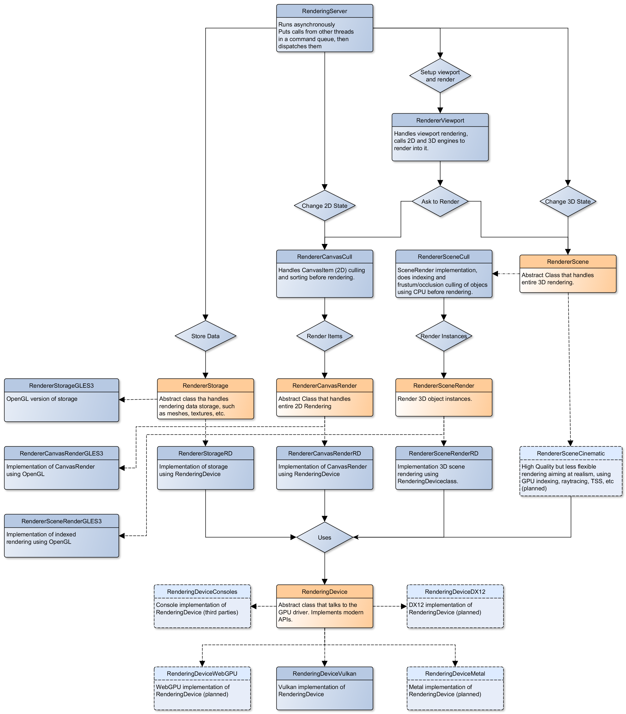

Kiến trúc kết xuất nội bộ
Trang này là phần tổng quan cấp cao về thiết kế renderer nội bộ của Godot 4. Nó không áp dụng cho các phiên bản Godot trước đó.
Mục tiêu của trang này là ghi lại các quyết định thiết kế được đưa ra để phù hợp nhất với triết lý thiết kế của Godot, đồng thời cung cấp điểm khởi đầu cho những người mới đóng góp vào phần kết xuất.
Nếu bạn có câu hỏi về cơ chế kết xuất nội bộ chưa được giải đáp ở đây, cứ thoải mái hỏi trong kênh #rendering của Godot Contributors Chat.
Ghi chú
Nếu bạn gặp khó khăn khi hiểu các khái niệm trong trang này, bạn nên tìm hiểu qua một bài hướng dẫn OpenGL như LearnOpenGL.
Các API cấp thấp hiện đại (Vulkan/Direct3D 12/Metal) đòi hỏi kiến thức trung cấp về các API cấp cao hơn (OpenGL/Direct3D 11) để sử dụng hiệu quả. May mắn là người đóng góp hiếm khi cần làm việc trực tiếp với các API cấp thấp. Các renderer của Godot được xây dựng hoàn toàn trên OpenGL và RenderingDevice, là lớp trừu tượng của chúng tôi trên Vulkan/Direct3D 12/Metal.
Các phương thức kết xuất
Forward+
Đây là một forward renderer dùng phương pháp chiếu sáng clustered.
Clustered lighting dùng một compute shader để nhóm các nguồn sáng vào một lưới 3D căn theo frustum. Sau đó, khi kết xuất, các pixel có thể tra cứu những nguồn sáng nào ảnh hưởng đến ô lưới chứa chúng và chỉ chạy tính toán ánh sáng cho các nguồn sáng có thể ảnh hưởng đến pixel đó.
Phương pháp này có thể tăng đáng kể hiệu năng kết xuất trên phần cứng desktop, nhưng kém hiệu quả hơn nhiều trên thiết bị di động.
Di động
Đây là một forward renderer dùng phương pháp chiếu sáng single-pass truyền thống. Nội bộ, nó được gọi là Forward Mobile.
Được thiết kế cho nền tảng di động, nhưng cũng có thể chạy trên nền tảng desktop. Phương thức kết xuất này được tối ưu để hoạt động tốt trên GPU di động. GPU di động có kiến trúc rất khác so với GPU desktop do các ràng buộc đặc thù về mức tiêu thụ pin, nhiệt độ và giới hạn băng thông tổng thể khi đọc ghi dữ liệu. Compute shader cũng được hỗ trợ rất hạn chế hoặc hoàn toàn không được hỗ trợ. Do đó, mobile renderer chỉ dùng các shader dựa trên raster (fragment/vertex).
Không giống GPU desktop, GPU di động thực hiện kết xuất dựa trên tile (tile-based rendering). Thay vì kết xuất toàn bộ hình ảnh như một khối duy nhất, hình ảnh được chia thành các tile nhỏ hơn vừa với bộ nhớ trong tốc độ cao của GPU di động. Mỗi tile được kết xuất rồi ghi ra texture đích. Toàn bộ quá trình này diễn ra tự động trong driver đồ họa.
Vấn đề là điều này tạo ra nút thắt cổ chai trong phương pháp truyền thống của chúng tôi. Với kết xuất desktop, chúng tôi kết xuất toàn bộ hình học không trong suốt, sau đó xử lý nền, rồi đến hình học trong suốt, rồi hậu xử lý. Mỗi pass cần đọc kết quả hiện tại vào bộ nhớ tile, thực hiện các thao tác rồi ghi ra lại. Sau đó chúng tôi chờ tất cả các tile hoàn tất trước khi chuyển sang pass tiếp theo.
Thay đổi quan trọng đầu tiên trong mobile renderer là nó không dùng định dạng texture RGBA16F như renderer desktop (Forward+). Thay vào đó, nó dùng định dạng texture R10G10B10A2 UNORM, trừ khi cài đặt dự án rendering/viewport/hdr_2d được bật. Điều này giảm một nửa băng thông cần thiết và còn có thêm cải thiện, vì phần cứng di động thường được tối ưu thêm cho các định dạng 32-bit. Đánh đổi là theo mặc định, mobile renderer có khả năng HDR hạn chế do độ chính xác và giá trị tối đa của dữ liệu màu bị giảm.
Khi cài đặt dự án rendering/viewport/hdr_2d được bật, mobile renderer dùng cùng định dạng RGBA16F như Forward+. Điều này cho phép hỗ trợ HDR đầy đủ, nhưng cũng làm tăng mức sử dụng băng thông và có thể giảm hiệu năng trên GPU di động hoặc đồ họa tích hợp.
Thay đổi quan trọng thứ hai là sử dụng sub-pass bất cứ khi nào có thể. Sub-pass cho phép chúng tôi thực hiện các bước kết xuất từ đầu đến cuối trên từng tile, tiết kiệm chi phí phát sinh từ việc đọc và ghi tile giữa mỗi pass kết xuất. Khả năng dùng sub-pass bị giới hạn bởi việc không thể đọc các pixel lân cận, vì chúng tôi bị ràng buộc làm việc trong phạm vi một tile duy nhất.
Giới hạn này của sub-pass khiến không thể hiện thực hiệu quả các tính năng như glow và depth of field. Tương tự, nếu cần đọc từ screen texture hoặc depth texture, chúng tôi phải ghi ra toàn bộ kết quả kết xuất, làm hạn chế khả năng dùng sub-pass. Khi các tính năng này được bật, sẽ dùng kết hợp sub-pass và pass thông thường, và các tính năng này gây ra mức giảm hiệu năng đáng kể.
Trên nền tảng desktop, việc dùng sub-pass sẽ không ảnh hưởng gì đến hiệu năng. Tuy nhiên, phương thức kết xuất này vẫn có thể hoạt động tốt hơn Forward+ trong các scene đơn giản nhờ độ phức tạp và mức sử dụng băng thông thấp hơn. Điều này đặc biệt rõ rệt trên GPU cấp thấp, đồ họa tích hợp hoặc trong các ứng dụng VR.
Do tập trung vào phần cứng cấp thấp, phương thức kết xuất này không cung cấp các tính năng kết xuất cao cấp như SDFGI và Sương mù thể tích và fog volume. Một số hiệu ứng hậu xử lý cũng không khả dụng.
Compatibility
Ghi chú
Đây là phương thức kết xuất duy nhất khả dụng khi dùng driver OpenGL. Phương thức kết xuất này không khả dụng khi dùng Vulkan, Direct3D 12 hoặc Metal.
Đây là một forward renderer truyền thống (không clustered). Nội bộ, nó được gọi là GL Compatibility. Nó được thiết kế cho các GPU cũ không hỗ trợ Vulkan, nhưng vẫn hoạt động rất hiệu quả trên phần cứng mới hơn. Cụ thể, nó được tối ưu cho các thiết bị di động cũ và cấp thấp. Tuy nhiên, nhiều tối ưu cũng áp dụng được, khiến nó cũng là lựa chọn tốt cho các máy desktop cũ và cấp thấp.
Giống Mobile renderer, Compatibility renderer dùng texture R10G10B10A2 UNORM cho kết xuất 3D. Khác với mobile renderer, màu được tonemap và lưu ở định dạng sRGB nên không có hỗ trợ HDR. Điều này giúp tránh phải có pass tonemapping và cho phép chúng tôi dùng texture ít bit hơn mà không bị banding đáng kể.
Compatibility renderer dùng phương pháp forward single-pass truyền thống để vẽ các đối tượng có nguồn sáng, nhưng dùng phương pháp multi-pass để vẽ các nguồn sáng có bóng đổ. Cụ thể, trong pass đầu tiên, nó có thể vẽ nhiều nguồn sáng không có bóng đổ và tối đa một DirectionalLight3D có bóng đổ. Trong mỗi pass tiếp theo, nó có thể vẽ tối đa một OmniLight3D, một SpotLight3D và một DirectionalLight3D có bóng đổ. Các nguồn sáng có bóng đổ sẽ ảnh hưởng đến scene khác với nguồn sáng không có bóng đổ, vì ánh sáng được hòa trộn trong không gian sRGB thay vì không gian tuyến tính. Sự khác biệt về chiếu sáng này sẽ ảnh hưởng đến diện mạo của scene và cần được lưu ý khi thiết kế scene cho Compatibility renderer.
Do tập trung vào phần cứng cấp thấp, phương thức kết xuất này không cung cấp các tính năng kết xuất cao cấp (còn ít hơn so với Mobile). Hầu hết các hiệu ứng hậu xử lý không khả dụng.
Tại sao không dùng deferred rendering?
Forward rendering thường mang lại sự cân bằng tốt hơn giữa hiệu năng và tính linh hoạt, đặc biệt khi dùng phương pháp chiếu sáng clustered. Mặc dù deferred rendering có thể nhanh hơn trong một số trường hợp, nó cũng kém linh hoạt hơn và đòi hỏi dùng các thủ thuật để có thể dùng MSAA. Vì các game có phong cách đồ họa ít chân thực có thể hưởng lợi nhiều từ MSAA, chúng tôi chọn forward rendering cho Godot 4 (giống Godot 3).
Dù vậy, một số phần của forward renderer có được thực hiện bằng phương pháp deferred để cho phép một số tối ưu khi có thể. Điều này đặc biệt áp dụng cho VoxelGI và SDFGI.
Một clustered deferred renderer có thể được phát triển trong tương lai. Renderer này có thể được dùng trong những tình huống ưu tiên hiệu năng hơn tính linh hoạt.
Driver kết xuất
Godot 4 hỗ trợ các API đồ họa sau:
Vulkan
Đây là driver chính trong Godot 4, với phần lớn trọng tâm phát triển dành cho driver này.
Yêu cầu tối thiểu là Vulkan 1.0, với các tính năng tùy chọn của Vulkan 1.1 và 1.2 được dùng khi có sẵn. volk được dùng làm Vulkan loader, và Vulkan Memory Allocator được dùng để quản lý bộ nhớ.
Cả hai Các phương thức kết xuất Forward+ và Mobile đều được hỗ trợ khi dùng driver Vulkan.
Tạo context Vulkan:
Tạo context Direct3D 12:
Direct3D 12
Giống Vulkan, driver Direct3D 12 chỉ nhắm đến các nền tảng hiện đại. Nó được thiết kế để nhắm đến cả Windows và Xbox (trong khi Vulkan không thể dùng trực tiếp trên Xbox).
Cả hai Các phương thức kết xuất Forward+ và Mobile đều có thể dùng với Direct3D 12.
Shader lõi được dùng chung với Vulkan renderer. Shader được chuyển đổi từ SPIR-V sang DXIL bằng Mesa NIR (thêm thông tin).
Driver này vẫn đang ở giai đoạn thử nghiệm và chỉ có từ Godot 4.3 trở đi. Mặc dù Direct3D 12 cho phép hỗ trợ các tính năng chỉ có trên Direct3D của Windows 11 như windowed optimizations và Auto HDR, Vulkan vẫn được khuyến nghị cho hầu hết các dự án. Xem pull request đã bổ sung hỗ trợ Direct3D 12 để biết thêm thông tin.
Metal
Godot cung cấp một driver Metal native hoạt động trên mọi phần cứng Apple Silicon (macOS ARM). So với việc dùng lớp chuyển đổi MoltenVK, driver này nhanh hơn đáng kể, đặc biệt trong các tình huống bị giới hạn bởi CPU.
Cả hai Các phương thức kết xuất Forward+ và Mobile đều có thể dùng với Metal.
Shader lõi được dùng chung với Vulkan renderer. Shader được chuyển đổi từ GLSL sang MSL bằng SPIRV-Cross.
Godot cũng hỗ trợ kết xuất Metal thông qua MoltenVK, được dùng làm phương án dự phòng khi không có hỗ trợ Metal native (ví dụ trên macOS x86).
Từ Godot 4.7, Metal 4 được dùng khi được hỗ trợ. Mọi phần cứng Apple Silicon đều hỗ trợ Metal 4, nhưng phải chạy macOS 26 trở lên hoặc iOS 26 trở lên. Metal 3 được tự động dùng làm phương án dự phòng trên các phiên bản macOS và iOS cũ hơn. Xem pull request đã bổ sung hỗ trợ Metal 4 để biết thêm thông tin.
OpenGL
Driver này dùng OpenGL ES 3.0 và nhắm đến các thiết bị cũ và cấp thấp không hỗ trợ Vulkan. OpenGL 3.3 Core Profile được dùng trên nền tảng desktop để chạy driver này, vì hầu hết driver đồ họa trên desktop không hỗ trợ OpenGL ES. WebGL 2.0 được dùng cho các bản export web.
Có thể dùng trực tiếp OpenGL ES 3.0 trên nền tảng desktop bằng cách truyền đối số dòng lệnh --rendering-driver opengl3_es, tuy nhiên cách này chỉ hoạt động với các driver đồ họa có hỗ trợ OpenGL ES native (chẳng hạn Mesa).
Chỉ phương thức kết xuất Compatibility có thể dùng với driver OpenGL.
Shader lõi hoàn toàn khác với Vulkan renderer.
Nhiều tính năng nâng cao không được hỗ trợ với driver này, vì nó ưu tiên hàng đầu cho các thiết bị cấp thấp.
Tóm tắt các driver/phương thức kết xuất
Hiện có thể dùng các tổ hợp API kết xuất + phương thức kết xuất sau:
Vulkan + Forward+ (tùy chọn thông qua MoltenVK trên macOS và iOS)
Vulkan + Mobile (tùy chọn thông qua MoltenVK trên macOS và iOS)
Direct3D 12 + Forward+
Direct3D 12 + Mobile
Metal + Forward+
Metal + Mobile
OpenGL + Compatibility (tùy chọn thông qua ANGLE trên Windows và macOS)
Mỗi tổ hợp có những giới hạn và đặc điểm hiệu năng riêng. Hãy đảm bảo kiểm thử các thay đổi của bạn trên tất cả các phương thức kết xuất nếu có thể trước khi mở pull request.
Lớp trừu tượng RenderingDevice
Ghi chú
Driver OpenGL không dùng lớp trừu tượng RenderingDevice.
Để giúp việc xử lý độ phức tạp của các API đồ họa cấp thấp hiện đại dễ dàng hơn, Godot dùng lớp trừu tượng riêng gọi là RenderingDevice.
Điều này có nghĩa là khi viết code cho các phương thức kết xuất hiện đại, bạn thực ra không dùng trực tiếp các API Vulkan, Direct3D 12 hay Metal. Dù vẫn ở cấp thấp hơn một API như OpenGL, điều này giúp làm việc với renderer dễ dàng hơn, vì RenderingDevice sẽ trừu tượng hóa nhiều điểm đặc thù của từng API cho bạn. RenderingDevice có mức độ trừu tượng tương tự WebGPU.
Hiện thực RenderingDevice cho Vulkan:
Hiện thực RenderingDevice cho Direct3D 12:
Hiện thực RenderingDevice cho Metal:
Kiến trúc các lớp kết xuất cốt lõi
Sơ đồ này thể hiện cấu trúc các lớp kết xuất trong Godot, bao gồm lớp trừu tượng RenderingDevice:


Shader lõi
Mặc dù shader trong các dự án Godot được viết bằng một ngôn ngữ tùy chỉnh lấy cảm hứng từ GLSL, các core shader được viết trực tiếp bằng GLSL.
Các core shader này được nhúng vào file nhị phân của trình chỉnh sửa và export template khi biên dịch. Để thấy bất kỳ thay đổi nào bạn đã thực hiện với các shader GLSL đó, bạn cần biên dịch lại file nhị phân của trình chỉnh sửa hoặc export template.
Một số tính năng của material như height mapping, refraction và proximity fade không thuộc core shader, mà được thực hiện trong BaseMaterial3D mặc định bằng ngôn ngữ shader của Godot (không phải GLSL). Điều này được thực hiện bằng cách sinh mã shader cần thiết theo thủ tục, tùy thuộc vào các tính năng được bật trong material.
Theo quy ước, các file shader có _inc trong tên được include vào các file GLSL khác để tái sử dụng code tốt hơn. Tiền xử lý GLSL tiêu chuẩn được dùng để thực hiện điều này.
Cảnh báo
Core material shader sẽ được dùng bởi mọi material trong scene – cả với BaseMaterial3D mặc định lẫn shader tùy chỉnh. Do đó, các shader này phải được giữ đơn giản nhất có thể để tránh vấn đề hiệu năng và đảm bảo việc biên dịch shader không trở nên quá chậm.
Nếu bạn dùng rẽ nhánh if trong shader, hiệu năng có thể giảm vì mức sử dụng VGPR trong shader sẽ tăng. Điều này xảy ra ngay cả khi tất cả pixel đều được đánh giá là true hoặc false trong một frame nhất định.
Nếu bạn dùng rẽ nhánh tiền xử lý #if, số phiên bản shader cần thiết trong scene sẽ tăng. Trong trường hợp xấu nhất, việc thêm một #define boolean duy nhất có thể nhân đôi số phiên bản shader có thể cần biên dịch trong một scene. Trong một số trường hợp, Vulkan specialization constants có thể được dùng như một giải pháp thay thế nhanh hơn (nhưng hạn chế hơn).
Điều này có nghĩa là có một rào cản cao để thêm các tính năng material tích hợp mới vào Godot, cả trong core shader lẫn BaseMaterial3D. Mặc dù BaseMaterial3D có thể tận dụng việc sinh mã động để chỉ đưa vào mã shader khi tính năng được bật, nó vẫn đòi hỏi sinh thêm phiên bản shader khi các tính năng này được dùng trong dự án. Điều này có thể khiến hiện tượng giật do biên dịch shader trở nên rõ rệt hơn trong các scene 3D phức tạp.
Xem các bài blog The Shader Permutation Problem và Branching on a GPU để biết thêm thông tin.
Core GLSL material shader:
Forward+: servers/rendering/renderer_rd/shaders/forward_clustered/scene_forward_clustered.glsl
Mobile: servers/rendering/renderer_rd/shaders/forward_mobile/scene_forward_mobile.glsl
Compatibility: drivers/gles3/shaders/scene.glsl
Sinh material shader:
Các shader GLSL khác cho phương thức kết xuất Forward+ và Mobile:
Các shader GLSL khác cho phương thức kết xuất Compatibility:
Tách biệt kết xuất 2D và 3D
Ghi chú
Nội dung sau chỉ áp dụng cho phương thức kết xuất Forward+ và Mobile, không áp dụng cho Compatibility. Có thể dùng nhiều Viewport để mô phỏng điều này khi dùng Compatibility renderer, hoặc để thực hiện co giãn độ phân giải 2D.
2D và 3D được kết xuất vào các buffer riêng biệt, vì kết xuất 2D trong Godot được thực hiện trong không gian sRGB LDR, trong khi kết xuất 3D dùng không gian tuyến tính HDR.
Định dạng màu dùng cho kết xuất 2D là RGB8 (RGBA8 nếu thuộc tính Transparent trên Viewport được bật). Kết xuất 3D dùng depth buffer số nguyên không dấu chuẩn hóa 24-bit, hoặc số thực có dấu 32-bit nếu phần cứng không hỗ trợ depth buffer 24-bit. Kết xuất 2D không dùng depth buffer.
Việc co giãn độ phân giải 3D được thực hiện khác nhau tùy theo dùng co giãn bilinear hay FSR 1.0. Khi dùng co giãn bilinear, không có shader upscale đặc biệt nào được chạy. Thay vào đó, texture của viewport được kéo giãn và hiển thị bằng một linear sampler (khiến việc lọc diễn ra trực tiếp trên phần cứng). Điều này cho phép tối đa hóa hiệu năng của co giãn 3D bilinear.
Hàm configure() trong RenderSceneBuffersRD cấp phát lại các buffer 2D/3D khi độ phân giải hoặc tỉ lệ co giãn thay đổi.
Co giãn độ phân giải động hiện chưa được hỗ trợ, nhưng đã được lên kế hoạch cho một bản phát hành Godot trong tương lai.
Code C++ cấu hình buffer kết xuất 2D và 3D:
FSR 1.0:
Các kỹ thuật kết xuất 2D
Kết xuất ánh sáng 2D được thực hiện trong một pass duy nhất để đạt hiệu năng tốt hơn với số lượng lớn nguồn sáng.
Tất cả phương thức kết xuất đều có 2D batching để cải thiện hiệu năng, điều này đặc biệt rõ rệt khi có nhiều văn bản trên màn hình.
MSAA có thể được bật trong 2D để cung cấp khử răng cưa "tự động" cho đường và đa giác, nhưng FXAA không ảnh hưởng đến kết xuất 2D vì nó được tính trước khi kết xuất 2D bắt đầu. Các phương thức vẽ 2D của Godot như node Line2D hoặc một số phương thức draw_*() của CanvasItem cung cấp cách khử răng cưa riêng dựa trên triangle strip và màu đỉnh, không cần MSAA để hoạt động.
Một trường khoảng cách có dấu (signed distance field) 2D biểu diễn các node LightOccluder2D trong viewport sẽ được tự động tạo ra nếu shader của người dùng yêu cầu. Nó có thể được dùng cho nhiều hiệu ứng trong shader tùy chỉnh, chẳng hạn chiếu sáng toàn cục 2D. Nó cũng được dùng để tính va chạm của hạt (particle) trong 2D.
Shader GLSL tạo SDF 2D:
Các kỹ thuật kết xuất 3D
Reverse Z
Tất cả renderer của Godot đều dùng reverse Z. Điều này có nghĩa là depth buffer bị đảo ngược, với 1.0 biểu thị mặt phẳng gần và 0.0 biểu thị mặt phẳng xa. Cách này mang lại độ chính xác tốt hơn, đặc biệt ở khoảng cách xa.
Batching và instancing
Trong renderer Forward+, Vulkan instancing được dùng để gom nhóm việc kết xuất các đối tượng giống hệt nhau thuộc loại opaque hoặc alpha-tested nhằm tăng hiệu năng. (Các đối tượng alpha-blended không bao giờ được instancing.) Cách này không nhanh bằng việc gộp mesh tĩnh, nhưng vẫn cho phép cull từng instance riêng lẻ.
Kết xuất light, decal và reflection probe
Ghi chú
Hiện tại renderer Compatibility chưa hỗ trợ kết xuất decal.
Renderer Forward+ dùng clustered lighting. Cách này cho phép dùng bao nhiêu nguồn sáng tùy ý; hiệu năng phụ thuộc phần lớn vào diện tích che phủ trên màn hình. Các nguồn sáng không có bóng gần như không tốn chi phí nếu chúng không chiếm nhiều không gian trên màn hình.
Tất cả phương thức kết xuất cũng hỗ trợ kết xuất tối đa 8 directional light cùng lúc (mặc dù chất lượng bóng sẽ thấp hơn khi có nhiều hơn một nguồn sáng bật bóng).
Renderer Mobile dùng cách chiếu sáng single-pass, với giới hạn 8 OmniLight + 8 SpotLight tác động lên mỗi resource Mesh (cộng thêm giới hạn 256 OmniLight + 256 SpotLight trong tầm nhìn camera). Các giới hạn này được hardcode và không thể điều chỉnh trong cài đặt dự án.
Renderer Compatibility dùng cách chiếu sáng lai giữa single-pass và multi-pass. Nguồn sáng không có bóng được kết xuất trong một pass duy nhất. Nguồn sáng có bóng được kết xuất qua nhiều pass. Điều này là cần thiết vì lý do hiệu năng trên thiết bị di động. Do đó, hiệu năng không mở rộng tốt khi có nhiều nguồn sáng đổ bóng. Bạn nên chỉ để vài nguồn sáng có bóng trong camera frustum tại một thời điểm, và đặt các nguồn sáng đó cách xa nhau để mỗi đối tượng chỉ chịu tác động của 1 hoặc 2 nguồn sáng có bóng cùng lúc. Số lượng nguồn sáng tối đa hiển thị cùng lúc có thể được điều chỉnh trong cài đặt dự án.
Trong cả 3 phương thức, nguồn sáng không có bóng rẻ hơn nhiều so với nguồn sáng có bóng. Để cải thiện hiệu năng, nguồn sáng chỉ được cập nhật khi chính nó bị thay đổi hoặc khi các đối tượng trong bán kính của nó bị thay đổi. Hiện tại Godot chưa tách việc kết xuất bóng tĩnh khỏi kết xuất bóng động, nhưng điều này đã được lên kế hoạch cho một phiên bản trong tương lai.
Clustering cũng được dùng cho reflection probe và kết xuất decal trong renderer Forward+.
Area light sử dụng kỹ thuật Linearly Transformed Cosines.
Shadow mapping
Cả hai phương thức Forward+ và Mobile đều dùng PCF để lọc shadow map và tạo vùng bán ảnh (penumbra) mềm. Thay vì dùng một mẫu PCF cố định, các phương thức này dùng mẫu vogel disk, cho phép thay đổi số lượng mẫu và điều chỉnh chất lượng một cách mượt mà.
Godot cũng hỗ trợ percentage-closer soft shadows (PCSS) để kết xuất vùng bán ảnh của bóng chân thực hơn. Bóng PCSS chỉ có trong renderer Forward+ vì chúng quá nặng để dùng được trong renderer Mobile. PCSS cũng dùng kernel có hình vogel disk.
Ngoài ra, cả hai kỹ thuật shadow mapping đều xoay kernel theo từng pixel để giúp làm mềm các artifact do lấy mẫu thiếu (under-sampling).
Renderer Compatibility hỗ trợ shadow mapping cho các nguồn sáng DirectionalLight3D, OmniLight3D và SpotLight3D.
Khử răng cưa theo thời gian (TAA)
Ghi chú
Chỉ có trong renderer Forward+, không có trong renderer Mobile hay Compatibility.
Godot dùng một bản cài đặt TAA tùy chỉnh dựa trên bản cài đặt TAA cũ của Spartan Engine.
Temporal antialiasing cần motion vector để hoạt động. Nếu motion vector không được tạo đúng, hiện tượng bóng ma (ghosting) sẽ xảy ra khi camera hoặc đối tượng di chuyển.
Motion vector được tạo trên GPU trong shader material chính. Việc này được thực hiện bằng cách chạy vertex shader tương ứng với khung hình đã kết xuất trước đó (với transform camera trước đó) bên cạnh vertex shader cho khung hình hiện tại, rồi lưu phần chênh lệch giữa chúng vào một color buffer.
Ngoài ra, có thể dùng FSR 2.2 làm giải pháp upscale, đồng thời cung cấp thuật toán temporal antialiasing riêng. FSR 2.2 được cài đặt trên lớp trừu tượng RenderingDevice thay vì dùng trực tiếp mã tham chiếu của AMD.
TAA resolve:
FSR 2.2:
Chiếu sáng toàn cục (Global illumination)
Ghi chú
VoxelGI và SDFGI chỉ có trong renderer Forward+, không có trong renderer Mobile hay Compatibility.
Việc bake LightmapGI chỉ có trong renderer Forward+ và Mobile, và chỉ có thể thực hiện trong trình chỉnh sửa (không thực hiện được trong dự án đã xuất). Việc kết xuất LightmapGI được renderer Compatibility hỗ trợ.
Godot hỗ trợ GI dựa trên voxel (VoxelGI), GI dựa trên signed distance field (SDFGI) cùng với bake và kết xuất lightmap (LightmapGI). Các kỹ thuật này có thể được dùng đồng thời nếu muốn.
Việc bake lightmap diễn ra trên GPU bằng compute shader Vulkan. Lightmapper chạy trên GPU được cài đặt trong lớp LightmapperRD, kế thừa từ lớp Lightmapper. Điều này cho phép cài đặt thêm các lightmapper khác, mở đường cho việc port lightmapper chạy trên CPU vốn có trong Godot 3.x trong tương lai. Khi đó sẽ có thể bake lightmap khi dùng renderer Compatibility.
Mã C++ lõi của GI:
scene/3d/voxel_gi.cpp - Node VoxelGI
editor/scene/3d/voxel_gi_editor_plugin.cpp - Giao diện trình chỉnh sửa cho node VoxelGI
Shader GLSL lõi của GI:
servers/rendering/renderer_rd/shaders/environment/voxel_gi.glsl
servers/rendering/renderer_rd/shaders/environment/voxel_gi_debug.glsl - Chế độ vẽ debug VoxelGI
servers/rendering/renderer_rd/shaders/environment/sdfgi_debug.glsl - Chế độ vẽ debug SDFGI Cascades
servers/rendering/renderer_rd/shaders/environment/sdfgi_debug_probes.glsl - Chế độ vẽ debug SDFGI Probes
servers/rendering/renderer_rd/shaders/environment/sdfgi_integrate.glsl
servers/rendering/renderer_rd/shaders/environment/sdfgi_preprocess.glsl
servers/rendering/renderer_rd/shaders/environment/sdfgi_direct_light.glsl
Mã C++ của lightmapper:
scene/3d/lightmap_gi.cpp - Node LightmapGI
editor/scene/3d/lightmap_gi_editor_plugin.cpp - Giao diện trình chỉnh sửa cho node LightmapGI
scene/3d/lightmapper.cpp - Lớp trừu tượng
modules/lightmapper_rd/lightmapper_rd.cpp - Bản cài đặt lightmapper chạy trên GPU
Shader GLSL của lightmapper:
Độ sâu trường ảnh (Depth of field)
Ghi chú
Chỉ có trong renderer Forward+ và Mobile, không có trong renderer Compatibility.
Renderer Forward+ và Mobile dùng các cách tiếp cận khác nhau để kết xuất DOF, cho ra kết quả hình ảnh khác nhau. Điều này nhằm phù hợp nhất với đặc tính hiệu năng của phần cứng mục tiêu. Trong Forward+, DOF được thực hiện bằng compute shader. Trong Mobile, DOF được thực hiện bằng fragment shader (raster).
Có sẵn các hình dạng bokeh hộp, lục giác và tròn (từ nhanh nhất đến chậm nhất). Độ sâu trường ảnh có thể được jitter mỗi khung hình (tùy chọn) để cải thiện hình ảnh khi bật temporal antialiasing.
Mã C++ của độ sâu trường ảnh:
Shader GLSL của độ sâu trường ảnh (compute - dùng cho Forward+):
Shader GLSL của độ sâu trường ảnh (raster - dùng cho Mobile):
Hiệu ứng không gian màn hình (SSAO, SSIL, SSR, SSS)
Ghi chú
Chỉ có trong renderer Forward+, không có trong renderer Mobile hay Compatibility.
Renderer Forward+ hỗ trợ screen-space ambient occlusion, screen-space indirect lighting, screen-space reflections và subsurface scattering.
SSAO dùng một bản cài đặt bắt nguồn từ ASSAO của Intel (đã chuyển sang Vulkan). SSIL được phát triển từ SSAO để cung cấp chiếu sáng gián tiếp hiệu năng cao.
Khi bật cả SSAO và SSIL, một số phần của SSAO và SSIL được dùng chung để giảm tác động đến hiệu năng.
Theo mặc định, SSAO, SSIL và SSR được thực hiện ở một nửa độ phân giải để cải thiện hiệu năng.
SSR dùng Hi-Z buffer để cải thiện hiệu năng. Hi-Z buffer này được tạo từ depth buffer trong một compute shader. Xem pull request đã đại tu SSR để biết thêm thông tin.
Mã C++ của hiệu ứng không gian màn hình:
Shader GLSL của screen-space ambient occlusion:
servers/rendering/renderer_rd/shaders/effects/ssao_blur.glsl
servers/rendering/renderer_rd/shaders/effects/ssao_interleave.glsl
servers/rendering/renderer_rd/shaders/effects/ssao_importance_map.glsl
Shader GLSL của screen-space indirect lighting:
servers/rendering/renderer_rd/shaders/effects/ssil_blur.glsl
servers/rendering/renderer_rd/shaders/effects/ssil_interleave.glsl
servers/rendering/renderer_rd/shaders/effects/ssil_importance_map.glsl
Shader GLSL của screen-space reflections:
servers/rendering/renderer_rd/shaders/effects/screen_space_reflection.glsl
servers/rendering/renderer_rd/shaders/effects/screen_space_reflection_filter.glsl
servers/rendering/renderer_rd/shaders/effects/screen_space_reflection_resolve.glsl
servers/rendering/renderer_rd/shaders/effects/screen_space_reflection_hiz.glsl
servers/rendering/renderer_rd/shaders/effects/screen_space_reflection_downsample.glsl
GLSL của subsurface scattering:
Kết xuất bầu trời
Xem thêm
Godot hỗ trợ dùng shader để kết xuất nền bầu trời. Radiance map (được dùng để cung cấp ánh sáng môi trường và phản chiếu cho các material PBR) được tự động cập nhật dựa trên sky shader.
Các resource SkyMaterial như ProceduralSkyMaterial, PhysicalSkyMaterial và PanoramaSkyMaterial tạo ra một shader dựng sẵn để kết xuất bầu trời. Điều này tương tự với những gì BaseMaterial3D cung cấp cho material của scene 3D.
Bạn có thể tìm thấy chi tiết kỹ thuật về cách cài đặt trong bài viết Custom sky shaders in Godot 4.0.
Mã C++ kết xuất bầu trời:
servers/rendering/renderer_rd/environment/sky.cpp - Kết xuất bầu trời
scene/resources/sky.cpp - Resource Sky (đừng nhầm với kết xuất bầu trời)
scene/resources/3d/sky_material.cpp Các resource SkyMaterial (dùng trong resource Sky)
Shader GLSL kết xuất bầu trời:
Sương mù thể tích (Volumetric fog)
Ghi chú
Chỉ có trong renderer Forward+, không có trong renderer Mobile hay Compatibility.
Xem thêm
Godot hỗ trợ cách tiếp cận voxel căn theo frustum (froxel) để kết xuất sương mù thể tích. So với một bộ lọc hậu xử lý, cách tiếp cận này đa dụng hơn vì nó hoạt động được với mọi loại nguồn sáng. Sương mù cũng có thể dùng shader cho hành vi tùy chỉnh, cho phép tạo hoạt ảnh cho sương mù hoặc dùng texture 3D để biểu diễn mật độ.
Resource FogMaterial tạo ra một shader dựng sẵn cho các node FogVolume. Điều này tương tự với những gì BaseMaterial3D cung cấp cho material của scene 3D.
Bạn có thể tìm thấy giải thích kỹ thuật chi tiết trong bài viết Fog Volumes arrive in Godot 4.0.
Mã C++ của sương mù thể tích:
servers/rendering/renderer_rd/environment/fog.cpp - Sương mù thể tích nói chung
scene/3d/fog_volume.cpp - Node FogVolume
scene/resources/3d/fog_material.cpp - Resource FogMaterial (được FogVolume sử dụng)
Shader GLSL của sương mù thể tích:
Occlusion culling
Mặc dù GPU hiện đại có thể vẽ rất nhiều tam giác, số lượng draw call trong các scene phức tạp vẫn có thể là điểm nghẽn (ngay cả với Vulkan, Direct3D 12 và Metal).
Godot 4 hỗ trợ occlusion culling để giảm overdraw (khi depth prepass bị tắt) và giảm lưu lượng vertex. Việc này được thực hiện bằng cách rasterize một buffer độ phân giải thấp trên CPU bằng Embree. Độ phân giải của buffer phụ thuộc vào số luồng CPU trên hệ thống, vì việc này được thực hiện song song. Buffer này bao gồm các hình dạng occluder đã được bake trong trình chỉnh sửa hoặc được tạo lúc chạy. Buffer occlusion culling được jitter một lượng nhỏ mỗi khung hình để giúp giảm các artifact do lấy mẫu thiếu, vốn có thể dẫn đến dương tính giả (đối tượng bị che khuất khi lẽ ra không bị).
Vì các occluder phức tạp có thể gây nhiều áp lực lên CPU, các occluder đã bake có thể được đơn giản hóa tự động khi được tạo trong trình chỉnh sửa.
Occlusion culling của Godot chưa hỗ trợ occluder động, nhưng các node OccluderInstance3D vẫn có thể được bật/tắt hiển thị hoặc di chuyển. Tuy nhiên, việc cập nhật các occluder phức tạp theo cách này sẽ chậm. Vì vậy, tốt nhất chỉ nên cập nhật occluder lúc chạy với các hình dạng occluder đơn giản như hình tứ giác (quad) hoặc hình hộp (cuboid).
Cách tiếp cận dựa trên CPU này có một vài ưu điểm so với các giải pháp khác, chẳng hạn như portal và room hoặc giải pháp culling dựa trên GPU:
Không cần thiết lập thủ công (nhưng có thể tinh chỉnh thủ công để đạt hiệu năng tốt nhất).
Không có độ trễ khung hình, vốn gây vấn đề trong cutscene khi camera chuyển cảnh hoặc khi camera di chuyển nhanh ra sau một bức tường.
Hoạt động như nhau trên mọi driver và phương thức kết xuất, không có hành vi khó lường tùy thuộc vào driver hay phần cứng GPU.
Occlusion culling được thực hiện bằng cách đăng ký các occluder mesh, thông qua các node OccluderInstance3D (bản thân chúng dùng các resource Occluder3D). Sau đó RenderingServer thực hiện occlusion culling bằng cách gọi Embree trong RendererSceneOcclusionCull.
Mã C++ của occlusion culling:
Visibility range (LOD)
Godot hỗ trợ level of detail phân cấp (HLOD) do người dùng tự tạo, với khoảng cách được người dùng chỉ định trong inspector.
Trong RenderingSceneCull, các hàm _scene_cull() và _render_scene() là nơi diễn ra phần lớn việc xác định LOD. Mỗi viewport có thể kết xuất cùng một mesh với các LOD khác nhau (để việc kết xuất chia đôi màn hình trông đúng).
Mã C++ của visibility range:
LOD mesh tự động
Lớp ImporterMesh được dùng cho quy trình import mesh 3D trong trình chỉnh sửa. Hàm generate_lods() của nó xử lý việc tạo LOD bằng thư viện meshoptimizer.
Việc tạo LOD mesh cũng đồng thời tạo ra các shadow mesh. Đây là các mesh có vertex được hàn lại với nhau bất kể smoothing và material. Điều này được dùng để cải thiện hiệu năng kết xuất bóng bằng cách giảm lưu lượng vertex cần thiết để kết xuất bóng.
Hàm _render_scene() của lớp RenderingSceneCull xác định LOD mesh nào sẽ được dùng khi kết xuất. Mỗi viewport có thể kết xuất cùng một mesh với các LOD khác nhau (để việc kết xuất chia đôi màn hình trông đúng).
LOD mesh được chọn tự động dựa trên một chỉ số về độ che phủ màn hình. Chỉ số này tính đến thay đổi về độ phân giải và FOV của camera mà không cần người dùng can thiệp. Hệ số nhân ngưỡng có thể được điều chỉnh trong cài đặt dự án.
Để cải thiện hiệu năng, việc kết xuất bóng và kết xuất reflection probe cũng tự chọn ngưỡng LOD mesh riêng (có thể khác với ngưỡng của việc kết xuất scene chính).
Mã C++ tạo LOD mesh khi import:
Mã C++ xác định LOD mesh: